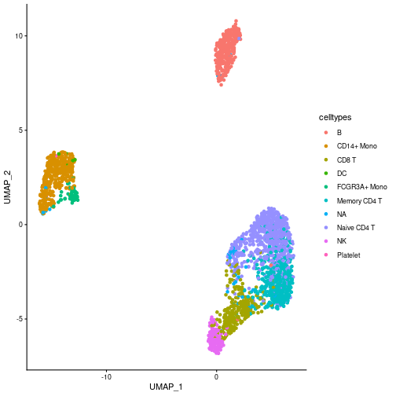
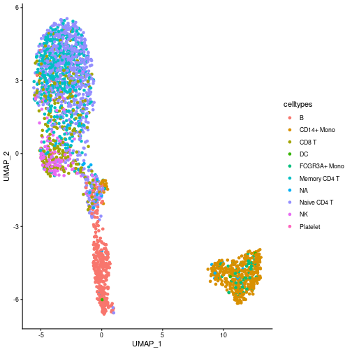
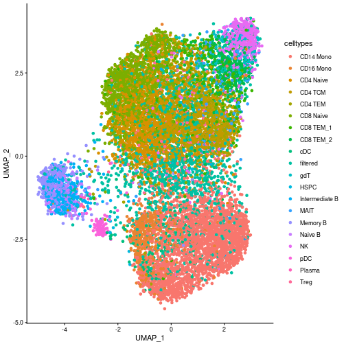

Flexibility of the dimensionality reduction assessment
Source:vignettes/stability-dim-reduction-flexibility.Rmd
stability-dim-reduction-flexibility.Rmd
is_seuratdata <- require("SeuratData", quietly = TRUE)
if (!is_seuratdata) {
devtools::install_github('satijalab/seurat-data', upgrade = "never")
}
is_harmony <- require("harmony", quietly = TRUE)
#> • This is Harmony2 version 2.0.5
#> • Read the guide: run vignette("quickstart", package="harmony")
#> • Get help: Visit the website at <https://korsunskylab.github.io/harmony2/> and report issues on <https://github.com/immunogenomics/harmony/issues>
if (!is_harmony) {
install.packages("harmony", repos = "https://cloud.r-project.org")
}
is_rsamtool <- require("Rsamtools", quietly = TRUE)
#> Warning: package 'Rsamtools' was built under R version 4.4.1
#> Warning: package 'GenomeInfoDb' was built under R version 4.4.1
#> Warning: package 'BiocGenerics' was built under R version 4.4.1
#>
#> Attaching package: 'BiocGenerics'
#>
#> The following object is masked from 'package:SeuratObject':
#>
#> intersect
#>
#> The following objects are masked from 'package:stats':
#>
#> IQR, mad, sd, var, xtabs
#>
#> The following objects are masked from 'package:base':
#>
#> anyDuplicated, aperm, append, as.data.frame, basename, cbind, colnames, dirname, do.call, duplicated, eval, evalq, Filter, Find, get, grep, grepl, intersect, is.unsorted, lapply, Map, mapply, match, mget, order, paste, pmax, pmax.int, pmin, pmin.int, Position, rank,
#> rbind, Reduce, rownames, sapply, setdiff, table, tapply, union, unique, unsplit, which.max, which.min
#>
#>
#> Attaching package: 'S4Vectors'
#>
#> The following object is masked from 'package:utils':
#>
#> findMatches
#>
#> The following objects are masked from 'package:base':
#>
#> expand.grid, I, unname
#>
#>
#> Attaching package: 'IRanges'
#>
#> The following object is masked from 'package:sp':
#>
#> %over%
#> Warning: package 'Biostrings' was built under R version 4.4.1
#> Warning: package 'XVector' was built under R version 4.4.1
#>
#> Attaching package: 'Biostrings'
#>
#> The following object is masked from 'package:dendextend':
#>
#> nnodes
#>
#> The following object is masked from 'package:base':
#>
#> strsplit
if (!is_rsamtool) {
is_biocmanager <- require("BiocManager", quietly = TRUE)
if (!is_biocmanager) {
install.packages("BiocManager", repos = "https://cloud.r-project.org")
library(BiocManager)
}
install("Rsamtools")
}
library(Seurat)
library(SeuratData)
library(ClustAssess)
library(ggplot2)
library(harmony)
library(data.table)
#> Warning: package 'data.table' was built under R version 4.4.1
#> data.table 1.15.4 using 8 threads (see ?getDTthreads). Latest news: r-datatable.com
#>
#> Attaching package: 'data.table'
#>
#> The following object is masked from 'package:GenomicRanges':
#>
#> shift
#>
#> The following object is masked from 'package:IRanges':
#>
#> shift
#>
#> The following objects are masked from 'package:S4Vectors':
#>
#> first, second
#>
#> The following object is masked from 'package:dendextend':
#>
#> set
library(Rsamtools)
n_repetitions <- 30The matrix processing parameter of the
assess_feature_stability function is a function that
enables the user to specify any method to perform the dimensionality
reduction prior to applying the UMAP algorithm and the clustering
pipeline. By default, the dimensionality reduction used in
ClustAssess is a precise PCA using the prcomp
package. However, this function can be easily changed, as it will be
shown in the following examples.
ClustAssess using PCA
For the PCA example, we will use the PBMC 3k dataset from the
SeuratData package. The preprocessing of the dataset is
identical with the one performed in the stability pipeline vignette.
options(timeout=3600)
InstallData("pbmc3k")
#> Warning: The following packages are already installed and will not be reinstalled: pbmc3k
data("pbmc3k")
pbmc3k <- UpdateSeuratObject(pbmc3k)
#> Validating object structure
#> Updating object slots
#> Ensuring keys are in the proper structure
#> Warning: Assay RNA changing from Assay to Assay
#> Ensuring keys are in the proper structure
#> Ensuring feature names don't have underscores or pipes
#> Updating slots in RNA
#> Validating object structure for Assay 'RNA'
#> Object representation is consistent with the most current Seurat version
pbmc3k <- PercentageFeatureSet(pbmc3k, pattern = "^MT-", col.name = "percent.mito")
pbmc3k <- PercentageFeatureSet(pbmc3k, pattern = "^RP[SL][[:digit:]]", col.name = "percent.rp")
# remove MT and RP genes
all.index <- seq_len(nrow(pbmc3k))
MT.index <- grep(pattern = "^MT-", x = rownames(pbmc3k), value = FALSE)
RP.index <- grep(pattern = "^RP[SL][[:digit:]]", x = rownames(pbmc3k), value = FALSE)
pbmc3k <- pbmc3k[!((all.index %in% MT.index) | (all.index %in% RP.index)), ]
pbmc3k <- subset(pbmc3k, nFeature_RNA < 2000 & nCount_RNA < 2500 & percent.mito < 7 & percent.rp > 7)
pbmc3k <- NormalizeData(pbmc3k, verbose = FALSE)
pbmc3k <- FindVariableFeatures(pbmc3k, selection.method = "vst", nfeatures = 3000, verbose = FALSE)
features <- dimnames(pbmc3k@assays$RNA)[[1]]
var_features <- pbmc3k@assays[["RNA"]]@var.features
n_abundant <- 3000
most_abundant_genes <- rownames(pbmc3k@assays$RNA)[order(Matrix::rowSums(pbmc3k@assays$RNA),
decreasing = TRUE
)]
pbmc3k <- ScaleData(pbmc3k, features = features, verbose = FALSE)We notice that the seurat_annotations column has some
missing values. For simplicity, we will replace them with “NA”.
mask <- is.na(pbmc3k$seurat_annotations)
pbmc3k$seurat_annotations <- as.character(pbmc3k$seurat_annotations)
pbmc3k$seurat_annotations[mask] <- "NA"Select the features used for the stability assessment.
features <- dimnames(pbmc3k@assays$RNA)[[1]]
var_features <- pbmc3k@assays[["RNA"]]@var.features
n_abundant <- 3000
most_abundant_genes <- rownames(pbmc3k@assays$RNA)[order(Matrix::rowSums(pbmc3k@assays$RNA),
decreasing = TRUE
)]
steps <- seq(from = 500, to = 3000, by = 500)
ma_hv_genes_intersection_sets <- sapply(steps, function(x) intersect(most_abundant_genes[1:x], var_features[1:x]))
ma_hv_genes_intersection <- Reduce(union, ma_hv_genes_intersection_sets)
ma_hv_steps <- sapply(ma_hv_genes_intersection_sets, length)Assess the stability of the dimensionality reduction when PCA is used as dimensionality reduction.
matrix_processing_function <- function(dt_mtx, actual_npcs = 30) {
actual_npcs <- min(actual_npcs, ncol(dt_mtx) %/% 2)
RhpcBLASctl::blas_set_num_threads(foreach::getDoParWorkers())
embedding <- stats::prcomp(x = dt_mtx, rank. = actual_npcs)$x
RhpcBLASctl::blas_set_num_threads(1)
rownames(embedding) <- rownames(dt_mtx)
colnames(embedding) <- paste0("PC_", seq_len(actual_npcs))
return(embedding)
}
pca_feature_stability <- assess_feature_stability(
data_matrix = pbmc3k@assays[["RNA"]]@scale.data,
feature_set = most_abundant_genes,
resolution = seq(from = 0.1, to = 1, by = 0.1),
steps = steps,
n_repetitions = n_repetitions,
feature_type = "MA",
graph_reduction_type = "PCA",
matrix_processing = matrix_processing_function,
umap_arguments = list(
min_dist = 0.3,
n_neighbors = 30,
metric = "cosine"
),
ecs_thresh = 1,
clustering_algorithm = 1
)Plot the distribution of the celltypes on the UMAP embedding obtained on the top 1000 Most Abundant genes.
umap_df <- data.frame(pca_feature_stability$embedding_list$MA$"1000")
umap_df$celltypes <- pbmc3k$seurat_annotations
ggplot(umap_df, aes(x = UMAP_1, y = UMAP_2, color = celltypes)) +
geom_point() +
theme_classic()
ClustAssess using Harmony
We can also modify the function by adding an addition post-processing step to the PCA. In this example, we will use the Harmony correction to remove the “batch effect” created by the celltypes. Note: This example is meant to exemplify how to use the Harmony correction in the ClusAssess pipeline. The batch correction is actually not needed in the PBMC 3k dataset.
matrix_processing_function <- function(dt_mtx, actual_npcs = 30) {
actual_npcs <- min(actual_npcs, ncol(dt_mtx) %/% 2)
RhpcBLASctl::blas_set_num_threads(foreach::getDoParWorkers())
embedding <- stats::prcomp(x = dt_mtx, rank. = actual_npcs)$x
RhpcBLASctl::blas_set_num_threads(1)
rownames(embedding) <- rownames(dt_mtx)
colnames(embedding) <- paste0("PC_", seq_len(actual_npcs))
embedding <- RunHarmony(embedding, pbmc3k$seurat_annotations, verbose = FALSE)
return(embedding)
}
pca_harmony_feature_stability <- assess_feature_stability(
data_matrix = pbmc3k@assays[["RNA"]]@scale.data,
feature_set = most_abundant_genes,
resolution = seq(from = 0.1, to = 1, by = 0.1),
steps = steps,
n_repetitions = n_repetitions,
feature_type = "MA",
graph_reduction_type = "PCA",
matrix_processing = matrix_processing_function,
umap_arguments = list(
min_dist = 0.3,
n_neighbors = 30,
metric = "cosine"
),
ecs_thresh = 1,
clustering_algorithm = 1,
verbose = TRUE
)
#>
MA - 500 [----------------------------------------] eta: ?s total elapsed: 0s
MA - 500 [======>---------------------------------] eta: 1m total elapsed: 17s
MA - 1000 [=====>---------------------------------] eta: 1m total elapsed: 17s
MA - 1000 [============>--------------------------] eta: 1m total elapsed: 33s
MA - 1500 [============>--------------------------] eta: 1m total elapsed: 33s
MA - 1500 [===================>-------------------] eta: 50s total elapsed: 50s
MA - 2000 [===================>-------------------] eta: 50s total elapsed: 50s
MA - 2000 [=========================>-------------] eta: 33s total elapsed: 1m
MA - 2500 [=========================>-------------] eta: 33s total elapsed: 1m
MA - 2500 [===============================>-------] eta: 17s total elapsed: 1m
MA - 3000 [===============================>-------] eta: 17s total elapsed: 1m
MA - 3000 [=======================================] eta: 0s total elapsed: 2m
```figures
Plot the distribution of the celltypes on the UMAP embedding obtained on the top 1000 Most Abundant genes.
``` r
umap_df <- data.frame(pca_harmony_feature_stability$embedding_list$MA$"1000")
umap_df$celltypes <- pbmc3k$seurat_annotations
ggplot(umap_df, aes(x = UMAP_1, y = UMAP_2, color = celltypes)) +
geom_point() +
theme_classic()
ClustAssess in the scATAC-seq data
In this example we will showcase the flexibility of the
assess_feature_stability function by using the ATAC-seq
data. For this example, we will use the multiome PBMC dataset from the
SeuratData package.
library(Signac)
#> Warning: package 'Signac' was built under R version 4.4.1
InstallData("pbmcMultiome")
#> Installing package into '/home/andi/R/x86_64-pc-linux-gnu-library/4.4'
#> (as 'lib' is unspecified)
data("pbmc.atac")As presented in the (Signac)(https://stuartlab.org/signac/articles/pbmc_vignette) package, the ATAC-seq data is usually processed using the TF-IDF normalization followed by the the calculation of the singular values. These two steps are also known as LSI (Latent Semantic Indexing).
pbmc.atac <- RunTFIDF(pbmc.atac)
#> Performing TF-IDF normalization
#> Warning in RunTFIDF.default(object = GetAssayData(object = object, layer = "counts"), : Some features contain 0 total countsIdentify the highly variable peaks.
pbmc.atac <- FindTopFeatures(pbmc.atac, min.cutoff = "q5")
var_peaks <- pbmc.atac@assays$ATAC@var.features[seq_len(3000)]To speedup the assessment, set a parallel backend with 6 cores.
RhpcBLASctl::blas_set_num_threads(1)
ncores <- 1
if (ncores > 1) {
my_cluster <- parallel::makeCluster(
ncores,
type = "PSOCK"
)
doParallel::registerDoParallel(cl = my_cluster)
}Assess the stability of the dimensionality reduction by varying the number of highly variable peaks.
matrix_processing_function <- function(dt_mtx, actual_n_singular_values = 50) {
actual_n_singular_values <- min(actual_n_singular_values, ncol(dt_mtx) %/% 2)
RhpcBLASctl::blas_set_num_threads(foreach::getDoParWorkers())
embedding <- RunSVD(Matrix::t(dt_mtx), n = actual_n_singular_values, verbose = FALSE)@cell.embeddings
# remove the first component, as it does contain noise - see the Signac vignette
embedding <- embedding[, 2:actual_n_singular_values]
RhpcBLASctl::blas_set_num_threads(1)
rownames(embedding) <- rownames(dt_mtx)
colnames(embedding) <- paste0("LSI_", seq_len(actual_n_singular_values - 1))
return(embedding)
}
lsi_atac_feature_stability <- assess_feature_stability(
data_matrix = pbmc.atac@assays[["ATAC"]]@data,
feature_set = var_peaks,
resolution = seq(from = 0.1, to = 1, by = 0.1),
steps = steps,
n_repetitions = n_repetitions,
feature_type = "HV_peaks",
graph_reduction_type = "PCA",
matrix_processing = matrix_processing_function,
umap_arguments = list(
min_dist = 0.3,
n_neighbors = 30,
metric = "cosine"
),
ecs_thresh = 1,
clustering_algorithm = 1,
verbose = TRUE
)
#>
HV_peaks - 500 [----------------------------------] eta: ?s total elapsed: 0s
#> Warning: No assay specified, setting assay as RNA by default.
#>
HV_peaks - 500 [=====>----------------------------] eta: 44m total elapsed: 9m
HV_peaks - 1000 [=====>---------------------------] eta: 44m total elapsed: 9m
#> Warning: No assay specified, setting assay as RNA by default.
#>
HV_peaks - 1000 [==========>----------------------] eta: 36m total elapsed: 18m
HV_peaks - 1500 [==========>----------------------] eta: 36m total elapsed: 18m
#> Warning: No assay specified, setting assay as RNA by default.
#>
HV_peaks - 1500 [===============>-----------------] eta: 26m total elapsed: 26m
HV_peaks - 2000 [===============>-----------------] eta: 26m total elapsed: 26m
#> Warning: No assay speciffiguresy as RNA by default.
#>
HV_peaks - 2000 [=====================>-----------] eta: 16m total elapsed: 32m
HV_peaks - 2500 [=====================>-----------] eta: 16m total elapsed: 32m
#> Warning: No assay specified, setting assay as RNA by default.
#>
HV_peaks - 2500 [===========================>-----] eta: 8m total elapsed: 38m
HV_peaks - 3000 [===========================>-----] eta: 8m total elapsed: 38m
#> Warning: No assay specified, setting assay as RNA by default.
#>
HV_peaks - 3000 [=================================] eta: 0s total elapsed: 43m
foreach::registerDoSEQ()Plot the distribution of the celltypes on the UMAP embedding obtained on the top 1000 Highly Variable peaks.
umap_df <- data.frame(lsi_atac_feature_stability$embedding_list$HV_peaks$"1000")
umap_df$celltypes <- pbmc.atac$seurat_annotations
ggplot(umap_df, aes(x = UMAP_1, y = UMAP_2, color = celltypes)) +
geom_point() +
theme_classic()
Session info
sessionInfo()
#> R version 4.4.0 (2024-04-24)
#> Platform: x86_64-pc-linux-gnu
#> Running under: Ubuntu 22.04.5 LTS
#>
#> Matrix products: default
#> BLAS: /usr/lib/x86_64-linux-gnu/openblas-pthread/libblas.so.3
#> LAPACK: /usr/lib/x86_64-linux-gnu/openblas-pthread/libopenblasp-r0.3.20.so; LAPACK version 3.10.0
#>
#> locale:
#> [1] LC_CTYPE=C.UTF-8 LC_NUMERIC=C LC_TIME=C.UTF-8 LC_COLLATE=C.UTF-8 LC_MONETARY=C.UTF-8 LC_MESSAGES=C.UTF-8 LC_PAPER=C.UTF-8 LC_NAME=C LC_ADDRESS=C LC_TELEPHONE=C LC_MEASUREMENT=C.UTF-8 LC_IDENTIFICATION=C
#>
#> time zone: Europe/Bucharest
#> tzcode source: system (glibc)
#>
#> attached base packages:
#> [1] stats4 stats graphics grDevices utils datasets methods base
#>
#> other attached packages:
#> [1] pbmcMultiome.SeuratData_0.1.4 Signac_1.14.0 data.table_1.15.4 Rsamtools_2.20.0 Biostrings_2.72.1 XVector_0.44.0 GenomicRanges_1.56.0 GenomeInfoDb_1.40.1 IRanges_2.38.0 S4Vectors_0.42.0
#> [11] BiocGenerics_0.50.0 harmony_2.0.5 Rcpp_1.0.13 Seurat_5.1.0 SeuratObject_5.0.2 sp_2.1-4 pbmc3k.SeuratData_3.1.4 SeuratData_0.2.2.9002 devtools_2.5.2 usethis_3.2.1
#> [21] ggplot2_4.0.3 ClustAssess_1.2.0 dendextend_1.19.1 dbscan_1.2.6 e1071_1.7-14
#>
#> loaded via a namespace (and not attached):
#> [1] RcppAnnoy_0.0.22 splines_4.4.0 later_1.3.2 bitops_1.0-7 tibble_3.2.1 polyclip_1.10-6 fastDummies_1.7.3 lifecycle_1.0.5 globals_0.16.3 lattice_0.22-5 MASS_7.3-60 magrittr_2.0.3
#> [13] plotly_4.10.4 httpuv_1.6.15 otel_0.2.0 sctransform_0.4.1 spam_2.10-0 sessioninfo_1.2.4 pkgbuild_1.4.8 spatstat.sparse_3.0-3 reticulate_1.37.0 cowplot_1.1.3 pbapply_1.7-2 RColorBrewer_1.1-3
#> [25] abind_1.4-5 pkgload_1.5.3 zlibbioc_1.50.0 Rtsne_0.17 purrr_1.0.2 rappdirs_0.3.3 GenomeInfoDbData_1.2.12 ggrepel_0.9.5 irlba_2.3.5.1 listenv_0.9.1 spatstat.utils_3.1-2 goftest_1.2-3
#> [37] RSpectra_0.16-2 spatstat.random_3.2-3 fitdistrplus_1.1-11 parallelly_1.37.1 RcppRoll_0.3.1 leiden_0.4.3.1 codetools_0.2-19 tidyselect_1.2.1 UCSC.utils_1.0.0 farver_2.1.2 viridis_0.6.5 matrixStats_1.3.0
#> [49] spatstat.explore_3.2-7 jsonlite_2.0.0 ellipsis_0.3.3 progressr_0.14.0 ggridges_0.5.6 survival_3.5-8 iterators_1.0.14 foreach_1.5.2 tools_4.4.0 progress_1.2.3 ica_1.0-3 glue_1.7.0
#> [61] gridExtra_2.3 xfun_0.56 dplyr_1.1.4 withr_3.0.3 fastmap_1.2.0 fansi_1.0.6 digest_0.6.35 R6_2.6.1 mime_0.12 colorspace_2.1-1 scattermore_1.2 tensor_1.5
#> [73] spatstat.data_3.0-4 RhpcBLASctl_0.23-42 utf8_1.2.4 tidyr_1.3.1 generics_0.1.3 class_7.3-22 prettyunits_1.2.0 httr_1.4.7 htmlwidgets_1.6.4 uwot_0.2.2 pkgconfig_2.0.3 gtable_0.3.6
#> [85] lmtest_0.9-40 S7_0.2.1 htmltools_0.5.8.1 dotCall64_1.1-1 scales_1.4.0 png_0.1-8 knitr_1.51 reshape2_1.4.4 nlme_3.1-163 proxy_0.4-27 cachem_1.1.0 zoo_1.8-12
#> [97] stringr_1.5.1 KernSmooth_2.23-22 parallel_4.4.0 miniUI_0.1.2 pillar_1.9.0 grid_4.4.0 vctrs_0.6.5 RANN_2.6.1 promises_1.3.0 xtable_1.8-4 cluster_2.1.6 evaluate_1.0.5
#> [109] cli_3.6.6 compiler_4.4.0 rlang_1.3.0 crayon_1.5.3 future.apply_1.11.2 labeling_0.4.3 plyr_1.8.9 fs_2.1.0 stringi_1.8.4 viridisLite_0.4.2 deldir_2.0-4 BiocParallel_1.38.0
#> [121] lazyeval_0.2.2 spatstat.geom_3.2-9 SharedObject_1.19.1 Matrix_1.7-0 RcppHNSW_0.6.0 hms_1.1.3 patchwork_1.2.0 future_1.33.2 shiny_1.8.1.1 ROCR_1.0-11 igraph_2.2.1 memoise_2.0.1
#> [133] fastmatch_1.1-6